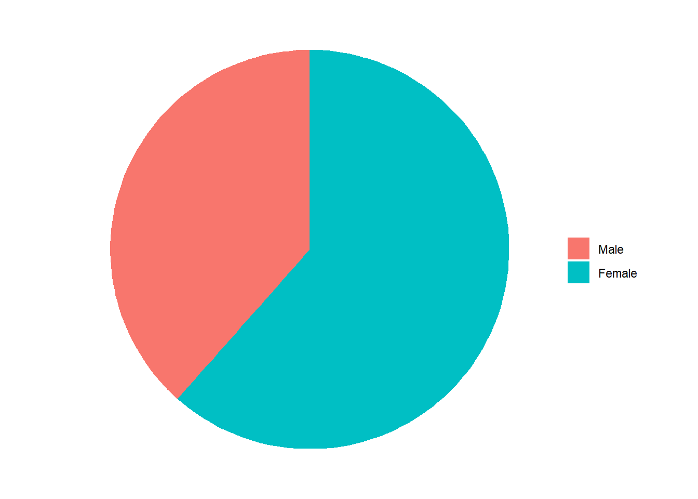

| Overall |
|---|---|
Plan to relocate? | |
Yes | 9 (69.2%) |
No | 4 (30.8%) |
Monthly costs | |
Mean (SD) | 9000 (7000) |
Median [Min, Max] | 8000 [0, 30000] |
Monthly household income | |
Mean (SD) | 50000 (40000) |
Median [Min, Max] | 40000 [5000, 100000] |
Missing | 3 (23.1%) |
Own house | |
Hyresrätt | 4 (30.8%) |
Bostadsrätt | 5 (38.5%) |
Äganderätt | 4 (30.8%) |
Kind of house | |
Småhus | 6 (46.2%) |
Flerbostadshus | 6 (46.2%) |
Övriga hus | 1 (7.7%) |
Specialbostäder | 0 (0%) |
Kind of device | |
Mobile | 5 (38.5%) |
Desktop | 8 (61.5%) |
Tablet | 0 (0%) |
AHRG Test survey results
Some initial figure
Descriptive data
When you click the Render button a document will be generated that includes both content and the output of embedded code. You can embed code like this:

| Comment | |
|---|---|
| 2 | The font could be (much) bigger. Also a couple of first questions I found not possible to answer, so would have altogether quite the survey after the first one, where could not choose "maybe" for relocation plans. Is everyone suppose to be so sure? Also in the next question it was only house and apartment. I think radhus is missing...? Because later I think it was in one of the drop down menus. |
| 3 | There is a mix of English and Swedish in a few places, e g "This includes avgift." The 9 housing alternatives made me frustrated because they were so similar. I think that if the pictures were different and showed (could be in a simple graphic) the different distances/parking/fees, it would be esasier. |
| 4 | Hmmm... Frustrating to only have two choices :-) I said I will move within 5 years. "You" forced me into choosing between apartments (not house). I want to move to reduce my costs, be close to shops and transportation. I don´t care about parking because I will get rid of my car when I move. So... If that was my "opinion" when I started the survey - afterwards I am not sure that that was the opinion I expressed...My point is, if we have cost, shops, transportation and parking as the attributes and only three of them are to some extent important to me, I had to weigh in factors that don´t reflect my opinion. Thanks for letting me test this, a lot of food for thought! / Marianne Granbom |
| 6 | I have done this type of survey before, so I know the design, but it was difficult to understand how to interpret the information about the environments before the questions were asked. The distances to transportation are relevant, but it was difficult to imagine that it is 15km to green areas in Sweden or will the survey be conducted in big cities. There is no back arrow and I couldn't check what green areas mean. |
| 7 | Nice with pictures! Maybe add blue areas to green areas since beaches are included. Choices would feel more accurate with adjusted distances. The arrow below each choice set could be a button - "Go to next choice set". |
| 8 | Some response choices are only in Swedish, so please consider add an English translation (even if it's not 100% accurate). as to the picture choice questions, it took some time to identify the differences. Would it be ok if the differences are highlighted in the descriptions? |
| 9 | Q about approx monthly cost - did you mean costs for the total household? Q about gender- better to have a check box with a third alternative. Do not use “different”. Better with “other” or “non of the above”. Q about current situation - I couldn’t answer correctly because a have two apartments one rental and one owned Distance to green - first alternate 5km is too far from my perspective Unrealistic housing alternative showed up with both 10km to green and shop. Is there such circumstances at any place in Sweden? Some alternatives were obvious- for example shorter distances to all variables and less expensive. |